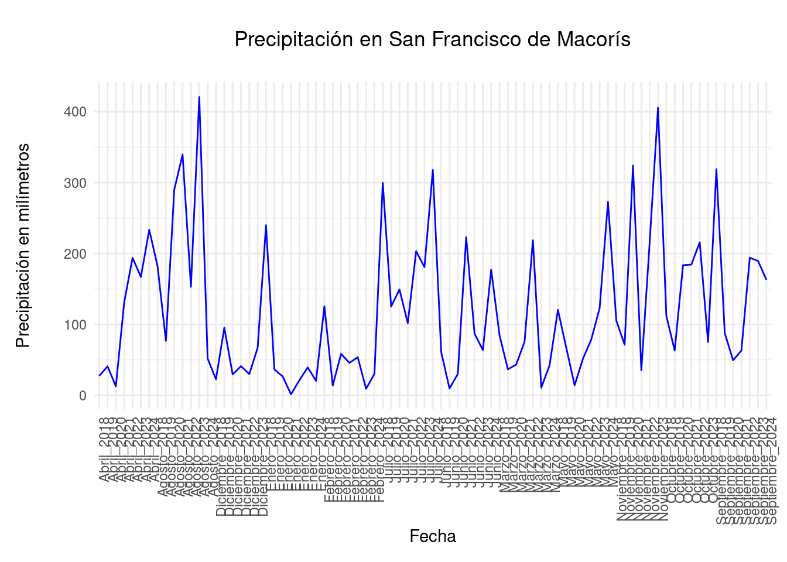

8 Sistema de IA para Agricultura de Precisión en el cultivo de Arroz en la provincia de San Francisco de Macorís, Rep. Dom.
8.1 Situación problema
La gestión eficiente del riego es un desafío crítico para la agricultura en República Dominicana, especialmente para los pequeños y medianos productores. El uso excesivo de agua, la falta de técnicas adecuadas para determinar la necesidad hídrica de los cultivos y la escasez de información precisa sobre las condiciones del suelo y el clima local pueden resultar en una sobreutilización de los recursos hídricos y en una baja productividad agrícola. Esto afecta tanto la sostenibilidad ambiental como la económica del sector.
En particular, muchos agricultores dependen de métodos de riego tradicionales que no consideran las variaciones en las necesidades de agua de los cultivos a lo largo del tiempo. Este enfoque puede provocar el uso ineficiente del agua, con un impacto negativo en la disponibilidad del recurso, especialmente en regiones donde la sequía y la variabilidad climática son crecientes. Además, la falta de información en tiempo real sobre las condiciones del suelo y las necesidades de los cultivos limita la capacidad de los agricultores para tomar decisiones informadas y adaptarse a las condiciones cambiantes del entorno.
El proyecto propuesto, un Sistema de IA para Agricultura de Precisión enfocado en el riego agrícola, busca resolver este problema al integrar sensores de suelo, estaciones meteorológicas y algoritmos de inteligencia artificial (IA) que analizan datos en tiempo real. Este sistema tiene el potencial de optimizar la gestión del riego, asegurando que los cultivos reciban la cantidad adecuada de agua, lo cual contribuiría a un uso más racional del recurso y a una mejora en la productividad de los cultivos.
8.2 Agencia financiadora
La agencia financiadora de este proyecto es el FONDOCYT (Fondo Nacional de Innovación y Desarrollo Científico y Tecnológico) de República Dominicana.
Descripción:
Es un fondo de incentivo a la investigación científica y tecnológica. El objetivo principal es fomentar la generación de nuevos conocimientos, el desarrollo de tecnologías innovadoras y la aplicación de la ciencia a la solución de problemas nacionales.
A través de la financiación de proyectos de investigación de alta calidad, el FONDOCYT busca contribuir al avance del conocimiento científico, tecnológico y social de la República Dominicana y, en última instancia, promover el desarrollo socioeconómico sostenible del país.
A quién va dirigido el servicio:
Instituciones de Investigación como son Universidades, Centros de Investigación e Instituciones especializadas a nivel superior, así como empresas siempre y cuando venga a consorciada con Instituciones de Educación Superior o Centros.
Los fondos para la financiación de los proyectos por parte del FONDOCYT se entregarán de la siguiente manera:
Desembolsos en base a informes de avance: Los recursos financieros se transferirán tras la aprobación de cada informe de avance, de acuerdo al plan de desembolso establecido en el proyecto y sin exceder los montos aprobados por año.
Modalidades de transferencia:
Gastos corrientes: Estos pueden ser transferidos en su totalidad o en parcialidades, dependiendo de lo acordado en el contrato del proyecto y de la disponibilidad de los fondos.
Gastos de capital: Se pueden transferir de manera completa o parcial según lo estipulado en el contrato del proyecto y la disponibilidad de recursos del FONDOCYT.
Condiciones específicas: La organización beneficiaria debe abrir una cuenta bancaria o contable exclusiva para los proyectos financiados, la cual debe ser auditada.
Posibilidad de ajustes: En casos donde se requiera la adquisición de equipos necesarios y se proyecte un exceso en el presupuesto anual aprobado, el MESCyT puede autorizar una dispensa, siempre que la petición esté debidamente justificada.
8.3 Datos relevantes del proyecto
<<<<<<< Updated upstream
library(readxl)
PrecipitacionRD <- read_excel("Data/PrecipitacionRD.xlsx")
hist(PrecipitacionRD$`PRECIPITACION EN MILIMETRO`)
library(tidyr)
Lluvias <- PrecipitacionRD %>% unite(Fecha, MES, AÑO)
colnames(Lluvias)[2] <- "Precipitacion"<<<<<<< HEAD El problema de las precipitaciones en República Dominicana se observa a continuación. Entre 2018 y 2024, las precipitaciones han estado por debajo de los 350 milímetros a excepción de dos ocasiones que han excedido los 400 milímetros.
library(readxl)
library(ggplot2)
PrecipitacionRD <- read_excel("Data/PrecipitacionRD.xlsx")
ggplot(Lluvias, aes(x = Fecha, y = Precipitacion, group = ESTACION)) + geom_line(color = "blue") +
labs(title = "Precipitación en San Francisco de Macorís", x = "Fecha", y = "Precipitación en milímetros") +
theme_minimal() +
theme(
plot.title = element_text(hjust = 0.5, margin = margin(b = 20)),
plot.margin = margin(t = 20, r = 10, b = 10, l = 10),
axis.title.y = element_text(margin = margin(r = 20)),
axis.text.x = element_text(angle = 90, hjust = 1) # Rotate x-axis labels by 45 degrees
)
8.4 Monto financiado
El monto máximo que podrá ser solicitado para el desarrollo de esta propuesta es de RD$12,000,000.00
8.5 Sectores económicos
Ciencias básicas (biología, química, física, matemática); fronteras, campos emergentes y aplicaciones; investigación en educación científica y tecnológica, y matemática educativa.
Medio ambiente, recursos naturales (conservación de suelo y agua, entre otros); recursos genéticos, prioridad en sistemas marino-costeros; impacto del cambio climático, con prioridad en el Caribe; y bioprospección.
Ciencia de la Salud y biomedicina; priorizando enfermedades infecciosas y crónicas.
Ciencias agroalimentarias y forestales; biotecnología, suelo, agua, salud animal, salud vegetal, modificaciones biotecnológicas.
Ciencia y tecnología de materiales, nanociencias, ciencias de la computación, tecnología de software y mecatrónica.
Todos los campos ingenieriles.